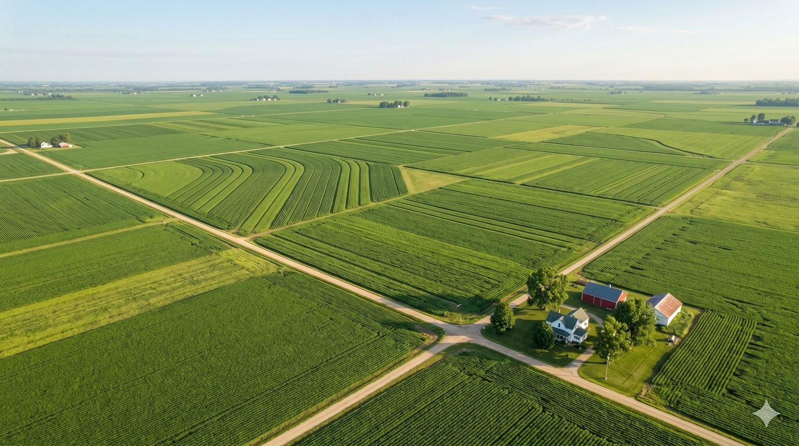

Supporting line that frames the story beneath the title, short enough to read at a distance.
The headline number, stated plainly
A second supporting metric card
The closing line restates the outcome and invites the next step.